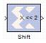

|
|
This block is listed in the following Xilinx Blockset libraries: Control Logic, Data Types, Math and Index.The Xilinx Shift block performs a left or right shift on the input signal. The result will have the same fixed-point container as that of the input.